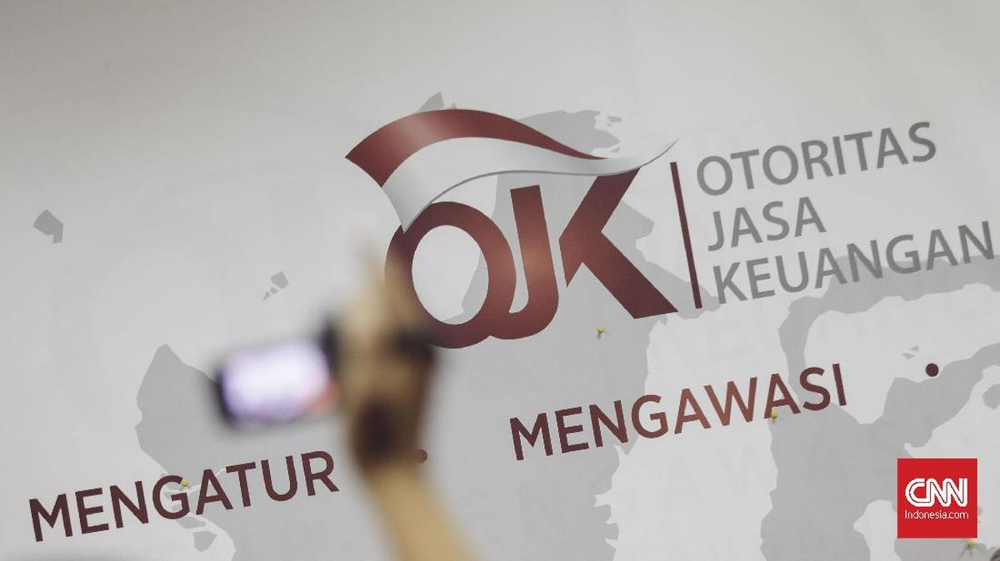
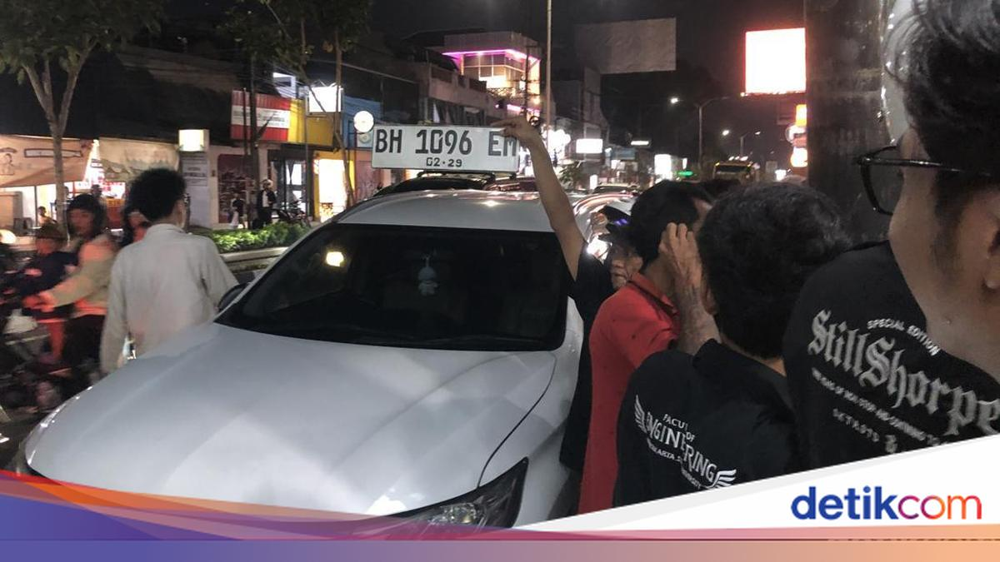
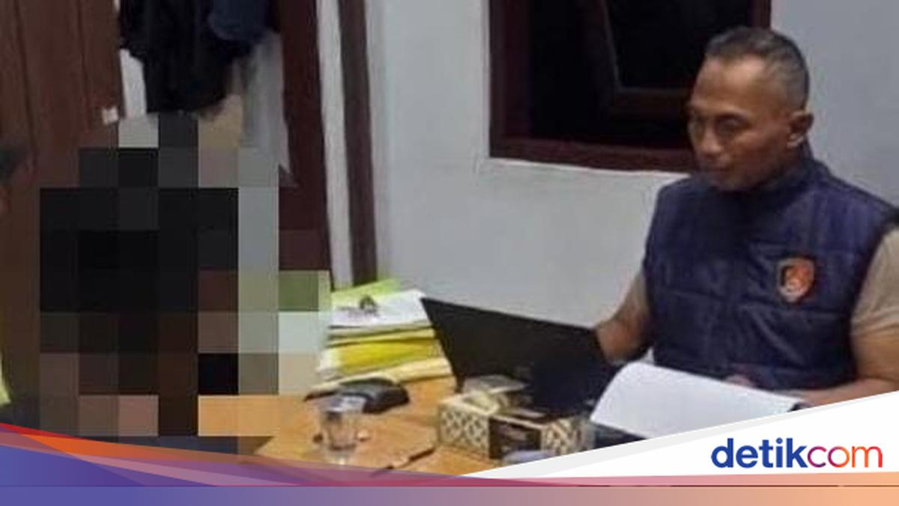

Ramai di
907 upvote




Mardani Ali Sera mengonfirmasi 50 anggota DPR menandatangani usulan Hak Menyatakan Pendapat terkait polemik ijazah Wapres Gibran. Angkanya bergerak dari 12 nama menjadi “50-an” dalam sehari.
Puan Maharani membenarkan dokumen sudah diterima pimpinan DPR dan berjanji menindaklanjuti setelah paripurna.
“Gibran sudah dimakzulkan” belum terjadi. HMP masih usulan.
Bulog membuka dialog dengan pelaku usaha perberasan pekan ini. Dirut Ahmad Rizal Ramdhani menyebut pertemuannya masih informal, dan berencana mengumpulkan “para sepuh” sektor ini sebelum mengambil keputusan.
Di sisi lain, Komisi IV DPR menyoroti 84 daerah yang harga berasnya melonjak, dan Kompas menyebut El Niño sebagai salah satu penyebab. Harga SPHP sendiri ditetapkan Rp13.100 per kilogram.
Yang tidak muncul di berita harian: SPHP adalah operasi pasar, bukan penurunan harga. Selama pasokan swasta menahan stok, harga eceran bisa tetap tinggi meski gudang Bulog penuh.
Kapan SPHP masuk pasar, dan berapa volume riil yang benar-benar disalurkan — bukan yang disiapkan.

